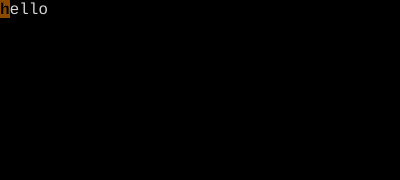
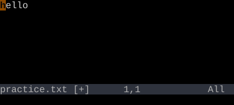
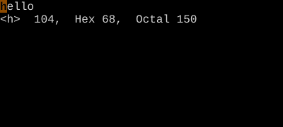

The g Family
30+ commands hide behind the g prefix.
g is a meta prefix: it gates a second, hidden keyboard of commands. From gd (go to definition) and gf (go to file) to gq (reformat) and gv (re-select), the g family covers everything that didn't fit elsewhere.
The g prefix is Vim's miscellaneous drawer — and it's huge. Roughly thirty commands live behind it. The unifying theme is "this didn't fit on a one-key shortcut, so it got the g prefix." Worth a flat reference table.
Reference (most-used)
| Key | Action |
|---|---|
| gd | Go to local definition under cursor |
| gD | Go to global definition |
| gf | Open file under cursor |
| gF | Open file under cursor at line :{n} |
| gv | Re-select last visual mode selection (see Visual Modes) |
| gi | Insert at the last insert mode position |
| g; | Previous change position |
| g, | Next change position |
| ge | Back to end of previous word |
| gE | Back to end of previous WORD |
| gj / gk | Down/up by display line (matters with wrap) |
| g0 | Display start of line |
| g^ | Display first non-blank |
| g_ | Last non-blank of line |
| gU{motion} | Uppercase operator |
| gu{motion} | Lowercase operator |
| g~{motion} | Toggle case operator |
| gq{motion} | Reformat (line-wrap) operator |
| g@{motion} | Call user operatorfunc (advanced) |
| ga | Show character info under cursor (also g8) |
| gx | Open URL under cursor in browser |
| g< | Re-show last command-line output |
| gn | Enter visual mode on the next search match (see Visual Modes) |
| gN | Enter visual mode on the previous search match (see Visual Modes) |
| gp / gP | Like p/P, but cursor lands after pasted text |
| gt / gT | Next / previous tab |
| gr{c} | Replace (virtual) — see *Replace Mode* |
| gR | Virtual replace mode |
| go | Go to byte {n} |
| g?{motion} | ROT13 the range (yes, really) |
Worked example — gU gu g~ ga
The g prefix is a grab-bag of useful commands.



Watch
- 📺 #0285 g@ Apply Operator (not yet published)
See also: The z Family, The [ and ] Family, The Ctrl-W Family, Complete Key Reference